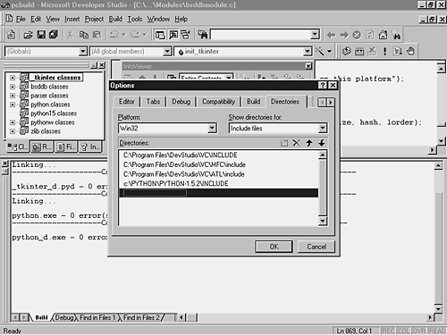
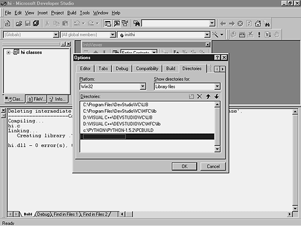

| < BACK | Make Note | Bookmark | CONTINUE > |
Compiling and Linking Extension Modules
Two options are available for building Python extension modules. The first one compiles and links the module into the interpreter. This option makes the module always available to the interpreter.
The second option doesn't require that you recompile the interpreter because it dynamically links the modules to the system.
Linking Static Extensions to the Interpreter
Before starting, make sure that you have already compiled the interpreter's source code (refer to Chapter 17, "Development Tools," for more details). Building and installing Python before adding new modules is essential to have the libraries and other files in the right places.
Static Extensions on UNIX
On UNIX, Python modules written in C are easily identified by looking at the /usr/lib/Python1.5 directory. Most of the time, they are the shared library files with the .so extension. Although, if you are using HPUX, the extension is .sl, and on some others it is just .o.
The next few steps show how to create static extensions on UNIX.
-
Step 1.
You need to copy your module to the Modules directory.
-
Step 2.
You have to add the following entry to the end of the /modules/Setup.in configuration file, which is located in the Python source tree. This file has the list of all the external libraries needed by the interpreter.
*static* modulename filename
For example,
hello /mnt/hda/python/helloworldmodule.c
If your extension module requires additional libraries, add the argument -llibraryname at the end of the line.
For example,
hello /mnt/hda/python/helloworldmodule.c -l/mnt/hda/python/auxmodule.c
The *static* flag builds the modules as static modules. The other option is to use the *shared* flag, which means that they have to be built as shared modules (known as DLLs on Windows).
The last step is to recompile Python as normal to include the extra module by typing ./configure and make in the top of the Python Source tree. The Python interpreter is rebuilt after that.
To execute the new interpreter and test your new extension module, just call it like this:
./python
Static Extensions on Windows
The following instructions are based on the use of Microsoft Visual C++ version 5.
First, you need to inform Python's include path. To do that, go to Tools, Options, Directories (see Figure 6.2).
Figure 6.2. You need to inform the include path.
It is also necessary to inform the library's location (see Figure 6.3). You need to add the python15.lib directory to your Tools, Options, Directories, Library files.
Figure 6.3. You need to inform the python15.lib path.
Now, the rest is easy.
-
Using a text editor, open the \PC\config.c file.
-
Look for the first comment. You need to add an external reference to the init function of your module.
/* -- ADDMODULE MARKER 1 -- */ extern void initmodulename();
-
Locate the next comment. You need to add the module name and the init function.
/* -- ADDMODULE MARKER 2 -- */ {"modulename", initmodulename}, -
Using a text editor, open the /PCbuild/python15.dsp file.
-
Go to the end of the file. Locate the entry that references the yuvconvert.c source file. You need to add the location of your module's source file just before that entry.
SOURCE=..\Modules\yourmodulenamemodule.c # End Source File # Begin Source File SOURCE=..\Modules\yuvconvert.c # End Source File # End Target # End Project
-
Using Microsoft Visual C++, open the /PCbuild/pcbuild.dsw workspace.
-
Select the Batch Build option and say Rebuild All.
By default, the EXE file and the DLLs will be saved in your /Pcbuild/ directory.
Linking Dynamic Extensions to the Interpreter
Now look at what you should do in order to create dynamic extension modules.
Dynamic Extensions on UNIX
The next few steps show how to build Dynamic extensions on UNIX.
-
Step 1.
Put the reference to your module in the Setup.in file. If your module references other source files, you should include them too. You might want to create a new Setup.in file in the directory containing your module.
*shared* spam helloworldmodule.c
-
Step 2.
Copy the Makefile.pre.in file to the directory where your module is located.
-
Step 3.
Type
make -f Makefile.pre.in boot make
This process creates a helloworldmodule.so file.
You could also try
gcc -c -I/usr/local/include/python1.5 helloworldmodule.c gcc -shared helloworldmodule.o -o helloworldmodule.so
Dynamic Extension on Windows
Next, how you can build a Dynamic Extension on Windows is illustrated.
-
Step 1.
Create a directory in the Python top-level directory. Give it the name of your module.
For example, c:\python\Python-1.5.2\pimodule
-
Step 2.
Copy your modulenamemodule. c file to this directory.
-
Step 3.
Copy the files example.def, example.dsp, example.dsw, and example.mak, which are located at the /PC/example_nt directory of the standard distribution to your new directory. Don't forget to rename the prefix of these files in order to match the name of your module.
-
Step 4.
On each file, replace the occurrences of example with your module name.
-
Step 5.
Choose the Build Menu option in order to generate your modulename.dll.
A subdirectory was created underneath your working directory. This subdirectory, called Release, contains your modulename.dll.
A tool created by David Ascher is very useful to create Python extension modules. It uses a UNIX Setup.in file to generate and build a Microsoft Visual C++ project. This tool is called compile.py.
To use it, you just need to put your C module and the compile.py file in the same directory, and execute the tool. When fired, the program creates a MS Visual C++ project (.dsp extension) and the workspace (.dsw extension).
Along with those files, it also creates a subdirectory called /pyds in which it stores the python extension module (.pyd extension).
In order to use this extension in your application, the interpreter needs to be able to locate the .pyd file by looking at the sys.path's variable.
compile.py is available at
http://starship.python.net:9673/crew/da/Code/compile
Installing and Using Dynamic Modules
You have four simple choices:
Place your module.so or module.dll in a directory that is defined by your PYTHONPATH environment variable. The site-packages directory under the lib directory is a good place to put your extension modules.
At runtime, you can add the extension module's path to sys.path.
On Windows, you can place the extension module in the same directory of the python.exe file.
Put the extension in the current directory when you start Python.
You won't find any difference while running dynamic modules. They act exactly the same way as the static modules that are linked to the interpreter.
Accessing Generic DLLs
Sam Rushing has created an extension module called calldll that enables Python to call any function that is part of a Windows DLL. It doesn't matter whether the DLL is a Python extension.
The problem to remember is that errors caused by non-Python extension DLLs don't return exception codes but error messages.
With this module you can call any function in any DLL. This means that you can do just about anything on Win32. This module includes a library that gives access to lots of the system GUI features, and a 'callback'generator for i386, which lets external functions call back into Python as if it were C. (Much of the Win32 API uses callbacks.)
Along with that, you can access ODBC by directly calling functions in odbc32.dll using a wrapper module called odbc.py. The ODBC module is implemented using calldll, and it has a few extra practical pieces; code for managing data sources, installing ODBC itself, and creating and maintaining Jet (Microsoft Access) databases. It has also been tested with ODBC drivers from Oracle and Objectivity. Of course, using calldll destroys any platform or architecture independence your program may have had.
You can see more details at http://www.nightmare.com/software.html.
| Last updated on 1/30/2002 Python Developer's Handbook, © 2002 Sams Publishing |
| < BACK | Make Note | Bookmark | CONTINUE > |